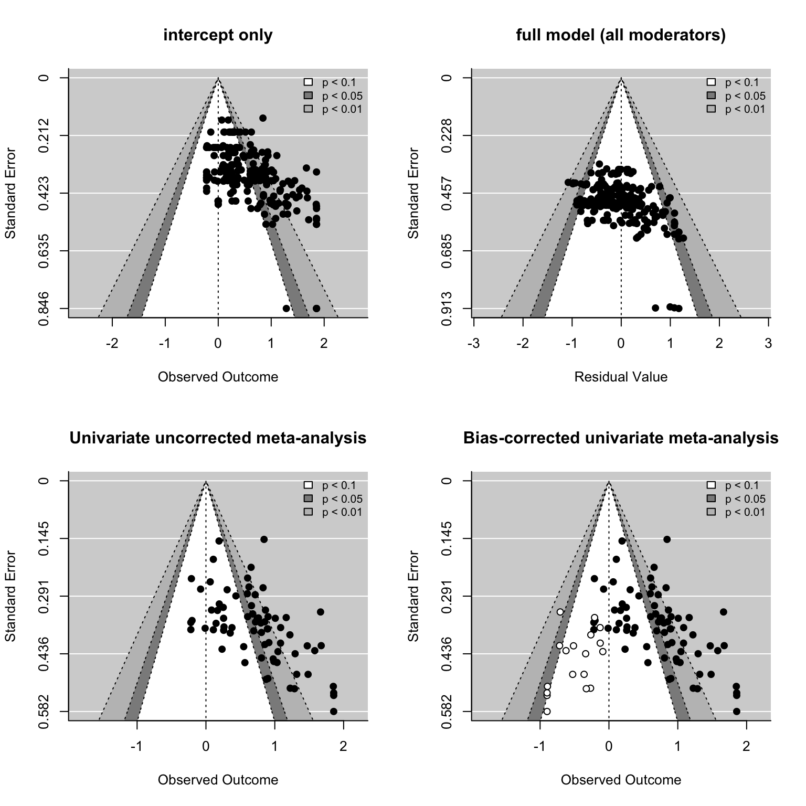
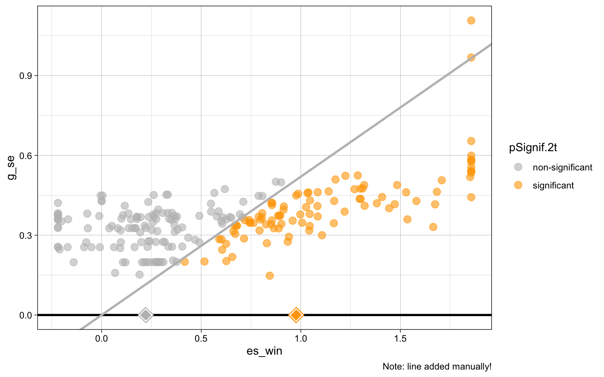
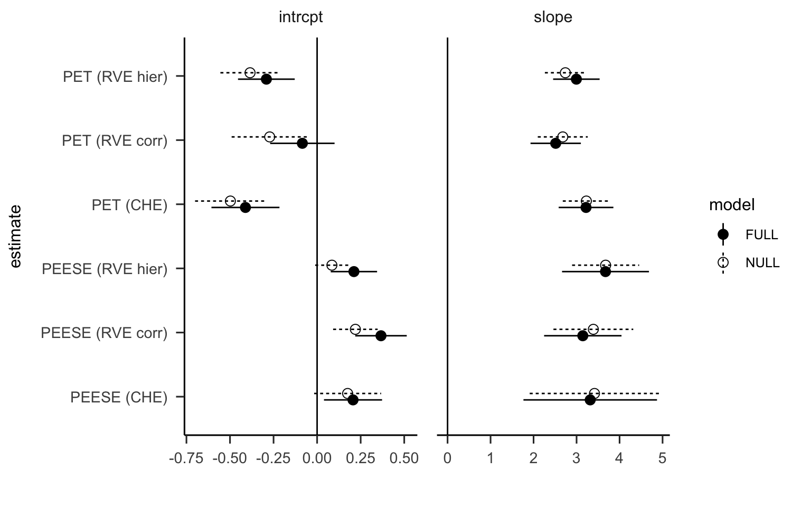
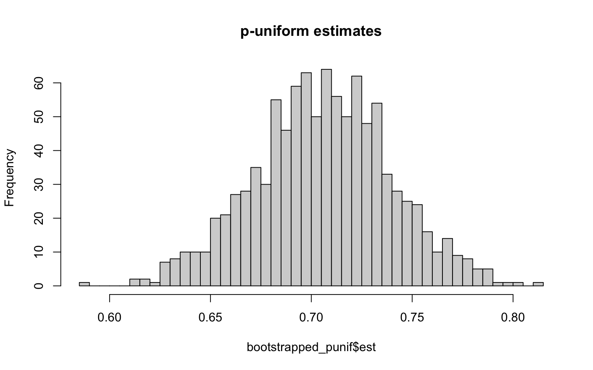
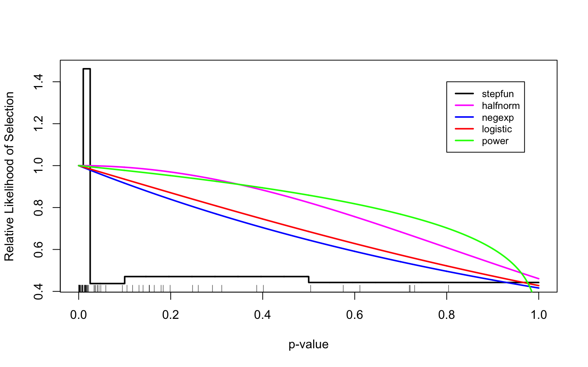
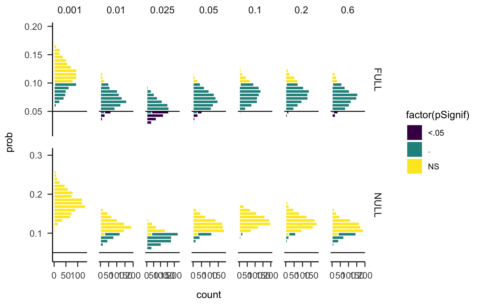
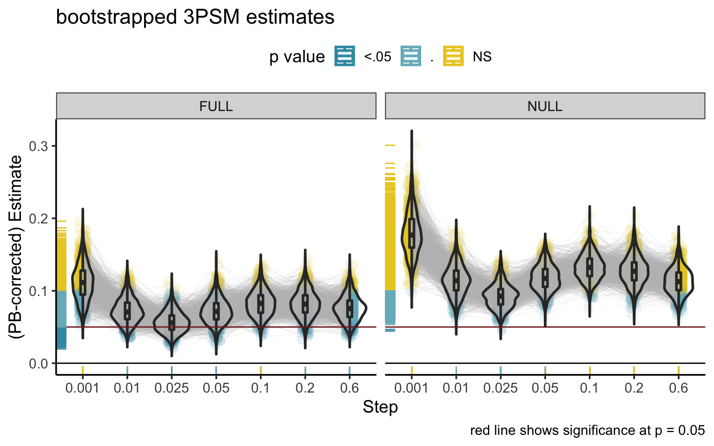
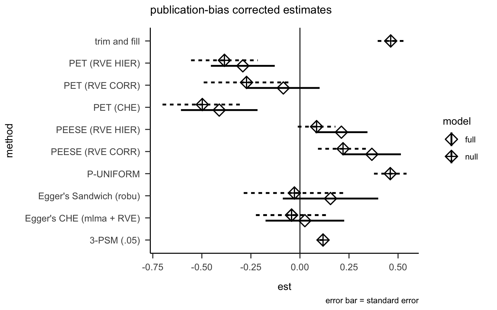

Chapter 5 Meta-analysis
Important Notes:
- All analyses are done on the winsorized dataset (i.e., extreme values replaced distribution boundaries)
- All clustering is done at the manuscript level.
=> This can be changed! Let me know if we should chat about these points!
This can be important given that:
- the same data has sometimes been published across several manuscripts
- and some manuscripts contains different subject samples.
5.1 Overall estimate
We use a multilevel meta-analytic model with robust variance estimates (RVE)
for correlated and hierarchical effects (CHE) with small sample correction.
The default correlation is set to 0.8 (default in RVE), and we use
sensitivity analyses (see below) to test the impact of different values.
The model includes a random factor for Papers and one for each effect sizes nested
in papers.
5.1.1 Multilevel model (without RVE)
##
## Multivariate Meta-Analysis Model (k = 224; method: REML)
##
## Variance Components:
##
## estim sqrt nlvls fixed factor
## sigma^2.1 0.0191 0.1382 73 no Paper
## sigma^2.2 0.1200 0.3464 224 no Paper/ES_ID
##
## Test for Heterogeneity:
## Q(df = 223) = 1007.1261, p-val < .0001
##
## Model Results:
##
## estimate se tval df pval ci.lb ci.ub
## 0.6227 0.0512 12.1651 223 <.0001 0.5218 0.7236 ***
##
## ---
## Signif. codes: 0 '***' 0.001 '**' 0.01 '*' 0.05 '.' 0.1 ' ' 1Note that this model reports model-based (not robust) standard errors.
The MLMA model reveals significant effect of AVG experience on cognition, with AVGPs outperforming NVGPs on cognitive tasks.
Overall estimate: g = 0.623, p = <.001
Residual heterogeneity is significant (QE(223) = 1007.126, p = <.001), suggesting possible moderating variables!
5.1.2 CHE model: Multilevel model with cluster-level RVE
This new model for Correlated and Hierarchical Effects (CHE) is based on recent work from Pustejovsky & Tipton (2021) as an extension of the range of RVE models. The CHE model was shown to better capture the types of data structure that occur in practice and –under some circumstances– to improve the efficiency of meta-regression estimates.
## Coef. Estimate SE t-stat d.f. p-val (Satt) Sig.
## 1 intrcpt 0.623 0.0513 12.1 59.6 <0.001 ***The cluster RVE is applied to adjust degrees of freedom and confidence intervals.
The CHE model usually gives smaller SE indicating improved precision.
5.1.4 univariate meta-analysis (for pub bias)
We also ran univariate models to apply the more classical methods for detection and correction of publication bias. Because univariate models assume independent effect sizes, we first randomly selected one effect size per study (paper).
##
## Random-Effects Model (k = 73; tau^2 estimator: REML)
##
## tau^2 (estimated amount of total heterogeneity): 0.1214 (SE = 0.0408)
## tau (square root of estimated tau^2 value): 0.3485
## I^2 (total heterogeneity / total variability): 52.39%
## H^2 (total variability / sampling variability): 2.10
##
## Test for Heterogeneity:
## Q(df = 72) = 151.0859, p-val < .0001
##
## Model Results:
##
## estimate se zval pval ci.lb ci.ub
## 0.6689 0.0587 11.3909 <.0001 0.5538 0.7840 ***
##
## ---
## Signif. codes: 0 '***' 0.001 '**' 0.01 '*' 0.05 '.' 0.1 ' ' 15.1.5 Summary of overall effects
| Model | beta | SE | CI_L | CI_U | tstat | df | pSignif |
|---|---|---|---|---|---|---|---|
| RVE correlated | 0.667 | 0.051 | 0.565 | 0.770 | 13.01 | 67.9 | <.001 |
| RVE hierarchical | 0.527 | 0.061 | 0.401 | 0.653 | 8.59 | 27.2 | <.001 |
| CHE | 0.623 | 0.051 | 0.520 | 0.725 | 12.15 | 59.6 | <.001 |
| univariate | 0.669 | 0.059 | 0.554 | 0.784 | 11.39 | 73.0 | <.001 |
Note. We pre-registered the CHE model as our primary model; other models are presented to show sensitivity of our results to various meta-analytic models.
5.2 Moderator analysis
Moderator analysis is based on the multilevel model (i.e. mlma WITHOUT RVE) because the Wald_test is not compatible with the CHE model (i.e., mlma with RVE)…
Our model includes moderators:
- Cognitive domain (9 levels)
- DV type: speed, accuracy (should we relabel as performance measure_ ?)
- Effect: main (e.g., overall performance), interaction (e.g., difference score)
- Recruitment: overt, covert
5.2.1 Compare RVE, CHE and SCE models
Notes:
- RVE = Robust Variance Estimate (effect sizes clustered by paper, correlated weights)
- CHE = Correlated Hierarchical Weights (random effects multilevel model with RVE)
- SCE = Subgroup Correlated Effects (alternative to running meta-analyses for each subgroup)
=> SCE RANDOM EFFECTS TO BE CHECKED BY MELISSA !
This analysis focuses on cognitive domain (primary moderator) and controls for other (secondary) moderators. The magnitude of the obtained estimates depends on the choice of reference levels for secondary moderators.
The Wald Test of moderator effects test the relative differences between levels and is thus not sensitive to reference levels. However, to test if individual estimate differs from zero, we need to correct each estimate using the relative frequency of each moderator level in the dataset.
All models include the following moderators and reference levels:
- Cognitive domain: reference = perception
- DV type: reference = accuracy
- Effect type: reference = interaction
- Recruitment: reference = covert
Analyses of moderator effects are based on CHE model.
Exploratory analyses using Subgroup Correlated Effects are also presented.
5.2.2 Tests of moderator effects (using CHE model)
| moderator | test | Fstat | delta | df_num | df_denom | p_val |
|---|---|---|---|---|---|---|
| Cognitive domain | HTZ | 0.575 | 1.000 | 1 | 1.18 | 0.570 |
| DV type | HTZ | 2.260 | 0.488 | 8 | 6.67 | 0.155 |
| Effect | HTZ | 0.021 | 1.000 | 1 | 21.36 | 0.885 |
| Recruitment | HTZ | 4.573 | 1.000 | 1 | 7.71 | 0.066 |
5.2.3 Estimates for each moderator level (different from zero?)
| moderator | level | k | m | g | CI | df | pval | LB | UB | pSignif |
|---|---|---|---|---|---|---|---|---|---|---|
| Cognitive domain | perception | 38 | 23 | 0.705 | 0.522,0.888 | 23.14 | 0.000 | 0.522 | 0.888 | <.001 |
| Cognitive domain | motor control | 3 | 2 | 1.055 | -4.294,6.404 | 1.03 | 0.251 | -4.294 | 6.404 | |
| Cognitive domain | bottom-up attention | 7 | 4 | 0.184 | -0.188,0.556 | 3.18 | 0.220 | -0.188 | 0.556 | |
| Cognitive domain | top-down attention | 76 | 44 | 0.614 | 0.471,0.756 | 40.62 | 0.000 | 0.471 | 0.756 | <.001 |
| Cognitive domain | inhibition | 10 | 9 | 0.519 | 0.208,0.83 | 8.03 | 0.005 | 0.208 | 0.830 | <.01 |
| Cognitive domain | spatial cognition | 27 | 16 | 0.628 | 0.428,0.829 | 14.39 | 0.000 | 0.428 | 0.829 | <.001 |
| Cognitive domain | multi-tasking | 24 | 11 | 0.792 | 0.248,1.336 | 8.59 | 0.010 | 0.248 | 1.336 | <.01 |
| Cognitive domain | verbal cognition | 31 | 14 | 0.450 | 0.265,0.635 | 12.64 | 0.000 | 0.265 | 0.635 | <.001 |
| Cognitive domain | problem solving | 8 | 6 | 0.288 | -0.017,0.593 | 4.43 | 0.059 | -0.017 | 0.593 | . |
| DV type | accuracy | 121 | 51 | 0.640 | 0.515,0.765 | 43.71 | 0.000 | 0.515 | 0.765 | <.001 |
| DV type | speed | 103 | 46 | 0.561 | 0.44,0.683 | 37.06 | 0.000 | 0.440 | 0.683 | <.001 |
| Effect | interaction | 63 | 26 | 0.593 | 0.394,0.793 | 23.92 | 0.000 | 0.394 | 0.793 | <.001 |
| Effect | main | 161 | 63 | 0.608 | 0.502,0.714 | 47.27 | 0.000 | 0.502 | 0.714 | <.001 |
| Recruitment | Covert | 32 | 9 | 0.436 | 0.231,0.641 | 5.86 | 0.002 | 0.231 | 0.641 | <.01 |
| Recruitment | Overt | 192 | 67 | 0.632 | 0.523,0.741 | 55.21 | 0.000 | 0.523 | 0.741 | <.001 |
Notes: Estimates with degrees of freedom under 4 should not be interpreted and are thus highlighted.
None of the moderators showed significant moderating influence according to AHT-F test (using clubSandwich::Wald_test) on the multilevel model (i.e., without RVE) except a marginal effect of recruitment.
AVGPs outperformed NVGPs in irrespective of cognitive domain, DV type, effect or recruitment method:
- Cognitive domain: stronger effects for perception and multitasking, followed by top-down attention,
spatial cognition and inhibition, and then verbal cognition. Marginal effect for problem solving and
unreliable estimates (low df) for motor control and bottom-up attention.
- DV type: significant effects on speed and accuracy.
- Effect: significant group differences for both overall (main effect) performance measures and
difference scores (interactions).
- Significant effect in both overtly and covertly recruited participants, with numerically larger effect for overt vs. covert.
- Cognitive domain: stronger effects for perception and multitasking, followed by top-down attention,
spatial cognition and inhibition, and then verbal cognition. Marginal effect for problem solving and
unreliable estimates (low df) for motor control and bottom-up attention.
Residual heterogeneity is still significant (QE(212) = 915.77, p = ), suggesting additional moderating variables may be involved ! => Additional analyses are needed to understand where this comes from:
- publication bias / small study effect (adding variance or sda to moderator models?)
- lab / joint publication group
- single moderator models
- publication bias / small study effect (adding variance or sda to moderator models?)
5.3 Publication bias
Numerous techniques exist for detecting and correcting publication bias. While methods for detecting publication bias (or small study effects) have improved largely over the past decades, it is not the case of correction methods such that estimating a unbiased (or publication-bias-corrected) estimate remains a challenge. The numerous methods available to date provide very heterogeneous estimates and will thus be reported in the form of sensitivity analysis as as recently recommended by Mathur & VanderWeele (2020).
Detection of publication bias was done for both:
- The overall effect (intercept only model) and
- The full model including all moderators
Our main publication bias detection approach is based on Egger’s regression test with a modified precision covariate (Pustejovsky & Rodgers, 2019).
In addition, we use a number of additional methods to estimate the adjusted effect,
because the estimates obtained from Eggers’s test (and PET-PEESE) are known to be
unreliable.
The best method for estimating the publication bias (or small-study) adjusted effect
is based on the 3-parameter model selection (see below).
5.3.1 (contour-enhanced) Funnel plots
Funnel plots are based on multilevel models without RVE, first for overall effect (i.e., intercept only)
and then for the full model (i.e., with all moderators).
In order to use trim and fill, we also conducted a univariate model using one randomly sampled estimate
from each cluster.

5.3.2 Significance funnel plot (Mathur & VanderWeele, 2020)
This new type of graphical illustration was introduced recently as an alternative to funnel plots.

Note: the line was drawn manually (i.e., no classification applied) with
intercept = 0 and slope = 0.52.
Non-affirmative studies have smaller point estimates than affirmative studies, suggesting that results may be sensitive to publication bias.
5.3.3 Egger’s regression with modified precision covariate
This method is based on work from Pustejovsky and Rodgers (2018), and Rodgers & Pustejovsky (2020).
The new (Egger’s sandwich) test has been shown to maintain type I error (unlike the inflated type I errors
commonly reported with other methods).
Quote from Pustejovsky & Rodgers 2020, page 36:
“the Egger Sandwich is an acceptable, valid test for meta-analysis, but it must be interpreted with caution both because it has limited power to detect funnel plot asymmetry and because, in practice, such asymmetry may have other causes besides selective reporting.”
“The Funnel Plot Test with MLMA maintains Type I error across nearly all conditions, and like the Egger Sandwich, it lacks power to detect funnel plot asymmetry.”
We ran both Egger’s Sandwich and Egger’s MLMA models on both overall effect (intercept only) and full model with all moderators.
| method | model | term | b | se | t | dfs | p | ci.lb | ci.ub |
|---|---|---|---|---|---|---|---|---|---|
| Egger CHE (MLMA + RVE) | NULL | intrcpt | -0.043 | 0.182 | -0.234 | 13.4 | 0.819 | -0.434 | 0.349 |
| Egger CHE (MLMA + RVE) | NULL | sda | 1.897 | 0.533 | 3.560 | 18.3 | 0.002 | 0.779 | 3.014 |
| Egger CHE (MLMA + RVE) | FULL | intrcpt | 0.025 | 0.200 | 0.125 | 19.5 | 0.902 | -0.394 | 0.444 |
| Egger CHE (MLMA + RVE) | FULL | sda | 1.793 | 0.648 | 2.767 | 22.3 | 0.011 | 0.450 | 3.136 |
| Egger Sandwich (RVE) | NULL | intrcpt | -0.028 | 0.258 | -0.109 | 12.0 | 0.915 | -0.591 | 0.535 |
| Egger Sandwich (RVE) | NULL | sda | 2.043 | 0.729 | 2.803 | 14.9 | 0.013 | 0.488 | 3.597 |
| Egger Sandwich (RVE) | FULL | intrcpt | 0.156 | 0.243 | 0.640 | 23.5 | 0.528 | -0.347 | 0.658 |
| Egger Sandwich (RVE) | FULL | sda | 1.906 | 0.732 | 2.605 | 15.0 | 0.020 | 0.346 | 3.466 |
notes:
- Terms: sda is the test of small-study effect; intercept is the corrected estimate
- Models: NULL is the intercept-only model; FULL is the full moderator model
Summary:
- The slope (sda) is significant indicating significant publication bias.
- The Intercept is not a reliable estimate of the bias-corrected effect (but shows how adding
publication bias / small study affects the estimate).
- The other estimates can be ignored too as they are sensitive to choice of reference levels!
- Surprisingly, heterogeneity is still highly significant, even when including all moderators!
=> subgroup analyses?
=> moderators lab / joint publication group?
=> other suggestions…?
5.3.4 PET-PEESE
Here, we applied PET and PEESE to our multilevel model with cluster robust variance (CHE model).
For PEESE, we used the modified precision estimate because it increases precision.
For comparison with Bediou et al., 2018, we also applied PET and PEESE to standard RVE models hierarchical weights and obtained similar results. In addition to the hierarchical weights used in Bediou et al. 2018, we also use correlated weights because they have been shown to perform significantly better in most situations.
Again, we ran the analysis both on the overall effect (i.e., intercept only) model and on the full model with all moderators.
Following Stanley & Doucouliagos 2013, we use the conditional PET-PEESE estimate as follows:
- If PET estimate is significant, we use PEESE estimate.
- If PET is NS, then we use PET estimate.
Note that this approach has been extensively criticized for its limitations, including by the authors themselves.
Melissa recommended to drop PET-PEESE entirely because it is known to inflate type I error and has been consistently outperformed by the new precision estimate used by Egger Sandwich. I left them for comparison with Bediou et al. 2018.

Click to see detailed results table!
| method | model | term | b | se | t | dfs | p | ci.lb | ci.ub |
|---|---|---|---|---|---|---|---|---|---|
| PET (RVE hier) | NULL | intrcpt | -0.385 | 0.170 | -2.262 | 6.26 | 0.063 | -0.797 | 0.027 |
| PET (RVE hier) | FULL | intrcpt | -0.291 | 0.163 | -1.789 | 24.09 | 0.086 | -0.627 | 0.045 |
| PET (RVE hier) | NULL | slope | 2.739 | 0.476 | 5.753 | 9.87 | 0.000 | 1.676 | 3.802 |
| PET (RVE hier) | FULL | slope | 2.995 | 0.541 | 5.540 | 18.73 | 0.000 | 1.863 | 4.128 |
| PET (RVE corr) | NULL | intrcpt | -0.272 | 0.218 | -1.247 | 14.73 | 0.232 | -0.738 | 0.194 |
| PET (RVE corr) | FULL | intrcpt | -0.085 | 0.185 | -0.458 | 23.79 | 0.651 | -0.467 | 0.297 |
| PET (RVE corr) | NULL | slope | 2.679 | 0.581 | 4.613 | 17.15 | 0.000 | 1.454 | 3.903 |
| PET (RVE corr) | FULL | slope | 2.515 | 0.585 | 4.296 | 17.65 | 0.000 | 1.283 | 3.746 |
| PET (CHE) | NULL | intrcpt | -0.498 | 0.203 | -2.454 | 15.87 | 0.026 | -0.928 | -0.067 |
| PET (CHE) | FULL | intrcpt | -0.411 | 0.195 | -2.108 | 20.56 | 0.048 | -0.818 | -0.005 |
| PET (CHE) | NULL | slope | 3.228 | 0.548 | 5.886 | 19.89 | 0.000 | 2.083 | 4.372 |
| PET (CHE) | FULL | slope | 3.220 | 0.636 | 5.062 | 22.88 | 0.000 | 1.904 | 4.536 |
| PEESE (RVE hier) | NULL | intrcpt | 0.085 | 0.096 | 0.885 | 6.68 | 0.407 | -0.144 | 0.314 |
| PEESE (RVE hier) | FULL | intrcpt | 0.211 | 0.133 | 1.589 | 22.09 | 0.126 | -0.064 | 0.487 |
| PEESE (RVE hier) | NULL | slope | 3.676 | 0.780 | 4.714 | 7.42 | 0.002 | 1.853 | 5.498 |
| PEESE (RVE hier) | FULL | slope | 3.673 | 1.011 | 3.634 | 7.00 | 0.008 | 1.283 | 6.063 |
| PEESE (RVE corr) | NULL | intrcpt | 0.220 | 0.128 | 1.719 | 12.71 | 0.110 | -0.057 | 0.496 |
| PEESE (RVE corr) | FULL | intrcpt | 0.367 | 0.148 | 2.478 | 18.24 | 0.023 | 0.056 | 0.677 |
| PEESE (RVE corr) | NULL | slope | 3.390 | 0.928 | 3.654 | 7.82 | 0.007 | 1.242 | 5.539 |
| PEESE (RVE corr) | FULL | slope | 3.145 | 0.900 | 3.494 | 7.69 | 0.009 | 1.055 | 5.235 |
| PEESE (CHE) | NULL | intrcpt | 0.175 | 0.192 | 0.911 | 10.41 | 0.383 | -0.251 | 0.601 |
| PEESE (CHE) | FULL | intrcpt | 0.206 | 0.167 | 1.236 | 18.45 | 0.232 | -0.144 | 0.556 |
| PEESE (CHE) | NULL | slope | 3.417 | 1.506 | 2.268 | 5.75 | 0.066 | -0.309 | 7.142 |
| PEESE (CHE) | FULL | slope | 3.318 | 1.553 | 2.136 | 5.63 | 0.080 | -0.544 | 7.179 |
5.3.5 Univariate methods (boostrapped)
5.3.5.1 Bootstrapped trim and fill (Duval & Tweedie, 2001)
Trim and fill, p-uniform and 3-PSM work only with independent effect sizes.
In order to run these analyses, we thus randomly picked one effect size per study (i.e. paper).
To verify that this random sampling does not introduce bias, we first checked the distribution of
the overall effect obtained from 1000 bootstrapped samples of one effect size per paper.
The univariate meta-analysis of 73 randomly selected independent effect sizes revealed an average overall effect of mean g = 0.659 (SD = 0.031)
## term b se ci.lb ci.ub
## 1 intrcpt 0.494 0.0307 0.433 0.558
Across the 1000 bootstrapped samples, trim and fill analysis imputed between 8 and 20 additional effects on the left side of the funnel plot (median = 16), in order to correct for its asymmetry.
These additional studies decreased the overall estimate to a mean of g = 0.494 (SD = 0.031), but did not alter significance all p’s < .001).
5.3.5.2 P-Uniform (van Assen, van Aert & Wicherts, 2015)
p-uniform is fundamentally similar to a p-curve that estimates the true effect using only significant effects. This method is not without limitations; it tends to overestimate effect sizes when heterogeneity is moderate to large, and is insensitive to p-values that are close to significance, or in the presence of p-hacking (Van Aerts, Wicherts & van Assen, 2016).
## term b se ci.lb ci.ub
## 1 intrcpt 0.706 0.0338 0.637 0.772 Studies with lower p values are observed less often than expected, whereas studies with high p values are more frequent than expected. Yet, the test of publication bias is not significant (pval = 1).
5.3.5.3 3-Parameter Selection Model (3PSM, Hedges & Vevea 1996).
Selection models are a general class of models that attempt to model the process by which the studies included in a meta-analysis may have been influenced by some form of publication bias. If a particular selection model is an adequate approximation for the underlying selection process, then the model provides estimates of the parameters of interest (e.g., the average true outcome and the amount of heterogeneity in the true outcomes) that are ‘corrected’ for this selection process (i.e., they are estimates of the parameters in the population of studies before any selection has taken place).
PSM Using selmodel function from metafor
This function allows to test different models.

Colours show different (model-based) selective reporting biases:
- Negexpm and logistic selection give identical results.
- Step, halfnorm and Power give different results.
3-PSM Using weightfunc from weightr
Here we focus on the 3-PSM approach, which models publication bias with 3-parameters.
The first one represents how much less likely a non-significant result is to be published
than a significant result. The other two parameters represent the estimated bias-adjusted
mean effect and the estimated heterogeneity of the effects.
Below we plot the distribution of estimates corrected for publication bias that are
obtained from 100 bootstrapped samples with different thresholds for selective reporting
ranging from 0.1 to 0.001.

5.3.6 Summary of publication-bias-corrected estimates
| method | model | term | b | se | ci.lb | ci.ub | t | dfs | p | pSignif |
|---|---|---|---|---|---|---|---|---|---|---|
| PET (CHE) | NULL | intrcpt | -0.498 | 0.203 | -0.928 | -0.067 | -2.454 | 15.87 | 0.026 | <.05 |
| PET (CHE) | FULL | intrcpt | -0.411 | 0.195 | -0.818 | -0.005 | -2.108 | 20.56 | 0.048 | <.05 |
| PET (RVE hier) | NULL | intrcpt | -0.385 | 0.170 | -0.797 | 0.027 | -2.262 | 6.26 | 0.063 | . |
| PET (RVE hier) | FULL | intrcpt | -0.291 | 0.163 | -0.627 | 0.045 | -1.789 | 24.09 | 0.086 | . |
| PET (RVE corr) | NULL | intrcpt | -0.272 | 0.218 | -0.738 | 0.194 | -1.247 | 14.73 | 0.232 | |
| PET (RVE corr) | FULL | intrcpt | -0.085 | 0.185 | -0.467 | 0.297 | -0.458 | 23.79 | 0.651 | |
| Egger CHE (MLMA + RVE) | NULL | intrcpt | -0.043 | 0.182 | -0.434 | 0.349 | -0.234 | 13.35 | 0.819 | |
| Egger Sandwich (RVE) | NULL | intrcpt | -0.028 | 0.258 | -0.591 | 0.535 | -0.109 | 12.00 | 0.915 | |
| Egger CHE (MLMA + RVE) | FULL | intrcpt | 0.025 | 0.200 | -0.394 | 0.444 | 0.125 | 19.51 | 0.902 | |
| 3-PSM | FULL | intrcpt | 0.079 | 0.024 | 0.040 | 0.136 | ||||
| PEESE (RVE hier) | NULL | intrcpt | 0.085 | 0.096 | -0.144 | 0.314 | 0.885 | 6.68 | 0.407 | |
| 3-PSM | NULL | intrcpt | 0.125 | 0.032 | 0.074 | 0.207 | ||||
| Egger Sandwich (RVE) | FULL | intrcpt | 0.156 | 0.243 | -0.347 | 0.658 | 0.640 | 23.51 | 0.528 | |
| PEESE (CHE) | NULL | intrcpt | 0.175 | 0.192 | -0.251 | 0.601 | 0.911 | 10.41 | 0.383 | |
| PEESE (CHE) | FULL | intrcpt | 0.206 | 0.167 | -0.144 | 0.556 | 1.236 | 18.45 | 0.232 | |
| PEESE (RVE hier) | FULL | intrcpt | 0.211 | 0.133 | -0.064 | 0.487 | 1.589 | 22.09 | 0.126 | |
| PEESE (RVE corr) | NULL | intrcpt | 0.220 | 0.128 | -0.057 | 0.496 | 1.719 | 12.71 | 0.110 | |
| PEESE (RVE corr) | FULL | intrcpt | 0.367 | 0.148 | 0.056 | 0.677 | 2.478 | 18.24 | 0.023 | <.05 |
| trim and fill | NULL | intrcpt | 0.494 | 0.031 | 0.433 | 0.558 | ||||
| p-uniform | NULL | intrcpt | 0.706 | 0.034 | 0.637 | 0.772 |
Note: models are sorted from lower to higher estimate; background colour differentiates between full and null models.
- Trim and fill, p-uniform and 3-PSM rely on independent effect sizes (randomly selected from each paper).
- p values rely on different tests depending on the exact publication bias method and model used.
- For p-uniform, SE corresponds to the difference between the upper and lower bounds of confidence interval.
- For 3-PSM, the mean is the average and the SE is the standard deviation of estimates across
100 bootstrapped samples.

- Across all analyses, the slope (tests of small-study effect / publication bias)
was always significant.
- The unbiased or corrected (i.e. publication-bias free) estimates vary tremendously and are thus reported as a form of a sensitivity analysis.